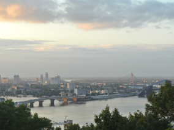
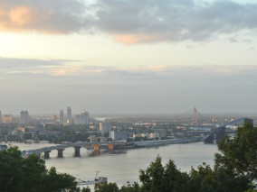
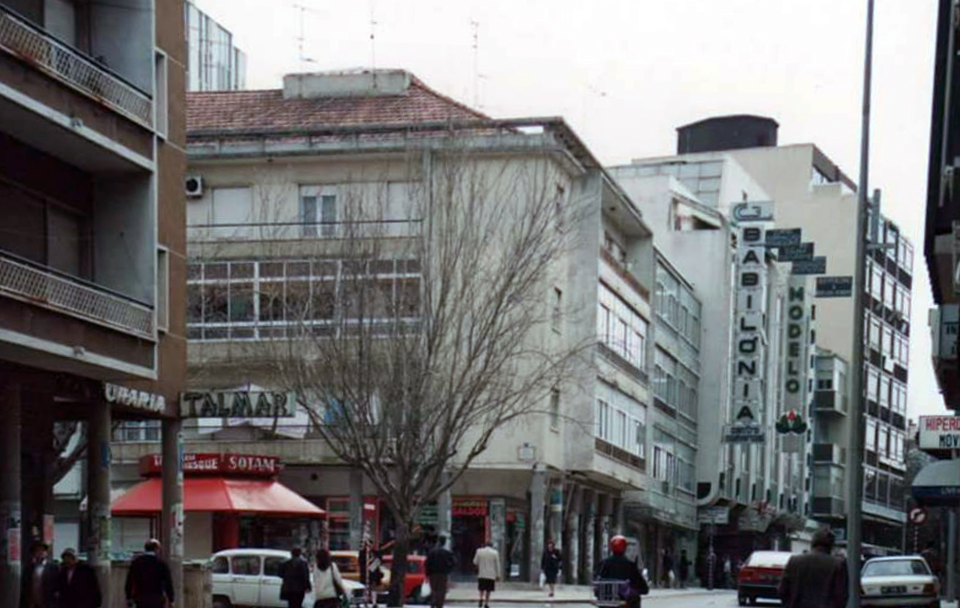

De Pátria para Pátria
Uma jornada épica do Kentucky ao Burundi pelo País de Gales e Ucrânia

Conheça um pouco mais sobre a localização dos seus amigos
Cada pessoa é um artista livre, chamado a transformar as condições, pensamentos e estruturas que moldam nossas vidas.
A cidade de TripleTen reuniu profissionais de diversos cantos do mundo. Hoje, a Galeria de Arte TripleTen tem o orgulho de apresentar histórias e fotos de algumas das pessoas que dedicam seu tempo e esforço para fazer com que os futuros profissionais de tecnologia desta cidade se sintam em casa. Cada um de nós tem uma história única sobre o lugar de onde viemos. Sinta-se à vontade para adicionar sua própria história e uma obra de arte visual dedicada à sua cidade natal à nossa coleção. Não importa de onde você é, estamos felizes por você ser nosso vizinho.


 



Criccieth, País de Gales

Artistas
Kseniya Glagoleva, gerente de projeto
Steffan Warren, editor-chefe
A ruína medieval do Castelo de Cricieth tem vista para a cidade abaixo de uma rocha que se projeta para o mar. Acredita-se que tenha sido construído por Llewelyn, o Grande, no século XIII. Cerca de 900 anos depois, a auto-intitulada *Pérola de Gales nas margens de Snowdonia* tornou-se um destino turístico popular durante os meses de verão.
A uma curta caminhada da estrada do castelo, você pode desfrutar do melhor sorvete do mundo no Cadwalader's, cujo ingrediente secreto, segundo rumores, são algas marinhas de origem local. Outra reivindicação à fama é o fato de que Criccieth ganhou o prêmio *Wales in Bloom* por cinco anos consecutivos por suas espetaculares exibições florais pela cidade. Foi também a casa de David Lloyd George, o único galês a ocupar o cargo de primeiro-ministro do Reino Unido.
Berea, EUA

Artista
Travis Turner, autor e editor
Berea é uma pequena cidade localizada na parte central do Kentucky. A cidade é cercada por belas florestas e campos. É conhecida como a capital do artesanato do estado, e os visitantes encontrarão muitas oportunidades de compras: lojas com bijuterias artesanais, velas, artigos de madeira, galerias, ateliês de vidro e muito mais. A cidade realiza um festival anual que celebra o "pão de colher", um prato local feito com pão de milho e servido com uma colher de pau.
No entanto, provavelmente é mais conhecido pela faculdade local. O Berea College foi fundado em 1855 e foi o primeiro colégio no sul a ser racialmente integrado, bem como o primeiro a ser misto. De forma um tanto singular, não cobra mensalidades - todo aluno recebe uma bolsa de estudos integral.
Muramvya, Burundi

Artista
Grevisse Kenguruka, editor técnico
Muramvya é uma das 18 províncias de Burundi. Na era do reino, Muramvya era a capital real e em 2007, por causa de sua paisagem cultural e natural, foi adicionada à Lista Provisória do Patrimônio Mundial da UNESCO. Está localizada no centro de Burundi, entre as capitais políticas e econômicas do país.
O Parque Nacional de Kibira, uma das maiores reservas de vida selvagem para macacos, se sobrepõe a quatro províncias, incluindo Muramvya. Este Parque Nacional encontra-se no ápice das belas montanhas do Congo-Nile Divide, variando entre 1.550 e 2.660 metros de altitude. Está repleta de uma bela vegetação e fonte para os vários rios e riachos que fornecem água em todo o país.
O clima é bastante frio à noite, mas durante o dia, você pensaria que está no céu. A 2.665 metros (8.743 pés) acima do nível do mar, o Monte Teza é um dos lugares mais frios da província. Mas essa brisa fresca permite uma das maiores plantações de chá e café do país, que representam a maior parte das exportações do Burundi.
Amadora, Portugal
Artistas
Fernando Pereira, Desenvolvedor Web FullStack
Criado em 11 de setembro de 1979, o Município da Amadora estende-se por uma área de 23,79Km2, onde vivem 171.454 habitantes, segundo os resultados definitivos dos Censos de 2021. Este Município foi o primeiro a ser criado após o 25 de Abril de 1974, deixando de ser nessa data uma freguesia do Concelho de Oeiras, ao qual pertencia desde 1916. O Município da Amadora inscreve-se na área geográfica da AMLN (Área Metropolitana de Lisboa Norte), fazendo fronteira terrestre com os Municípios de Lisboa, Odivelas, Sintra e Oeiras. Na altura da sua criação, o Município dividia-se em 8 freguesias: Alfragide, Brandoa, Buraca, Damaia, Falagueira-Venda Nova, Mina, Reboleira e Venteira.
A área do atual Município da Amadora era caracterizada nestes séculos pelos grandes campos de trigo e pelas casas apalaçadas. As profissões mais representativas nesse território eram os lavradores, moleiros, padeiros, almocreves e operários de indústrias manuais, que trabalhavam a terra, faziam o pão e abasteciam a capital de produtos agrícolas. No Século XVII (1631), foi construída uma Ponte Filipina, que na altura fazia a ligação entre a Freguesia de Benfica-Extramuros e Queluz, transpondo a Ribeira de Carenque no atual território da Amadora. Cerca de um século mais tarde, em 1732, foi iniciada a construção do Aqueduto Geral das Águas Livres. A vertente industrial florescia na zona. Prova disso é a fundação, no Século XIX (1832) da Fábrica de Espartilhos Santos Mattos & Companhia.